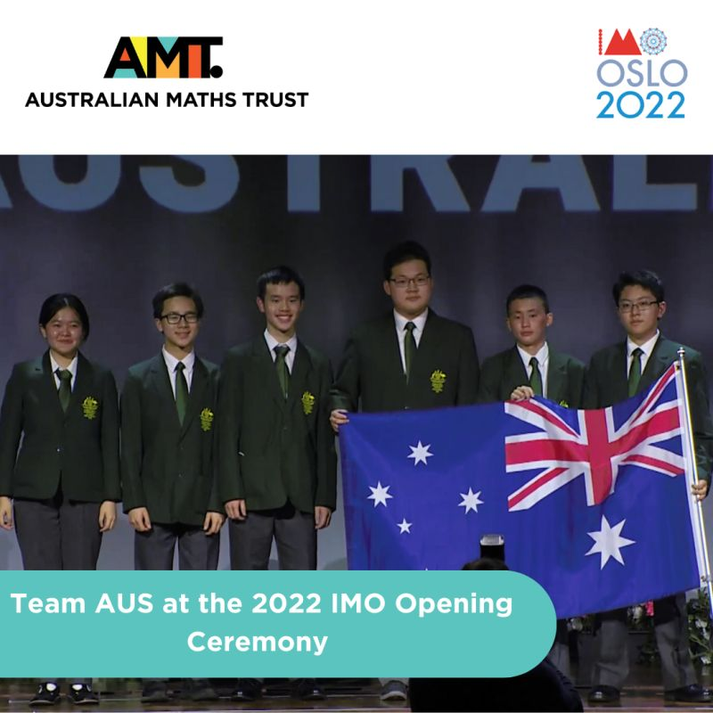
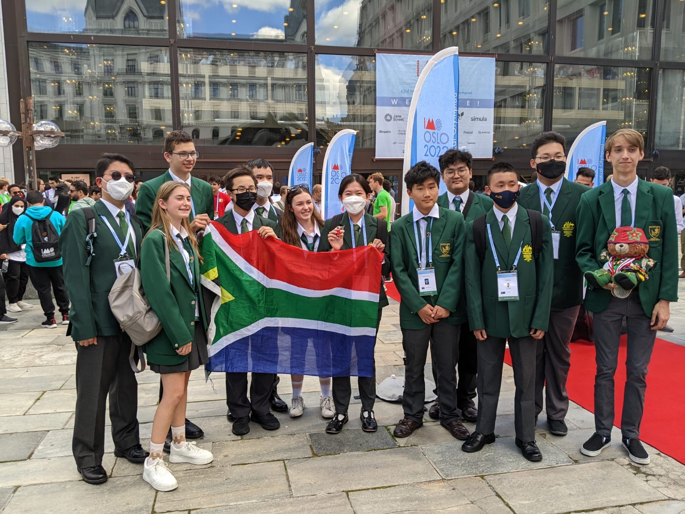
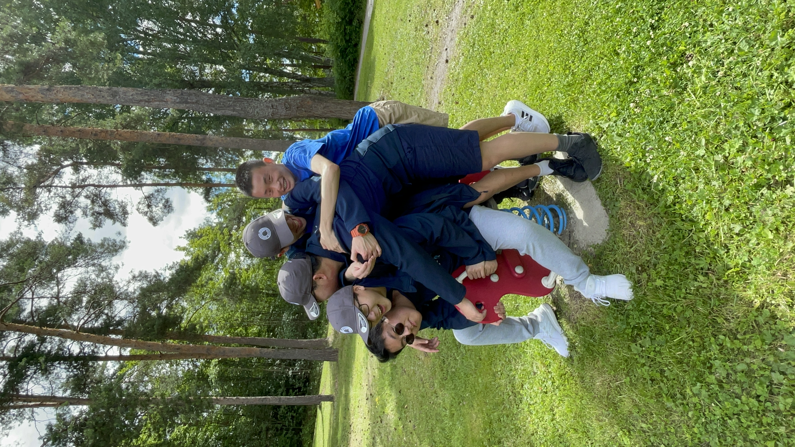
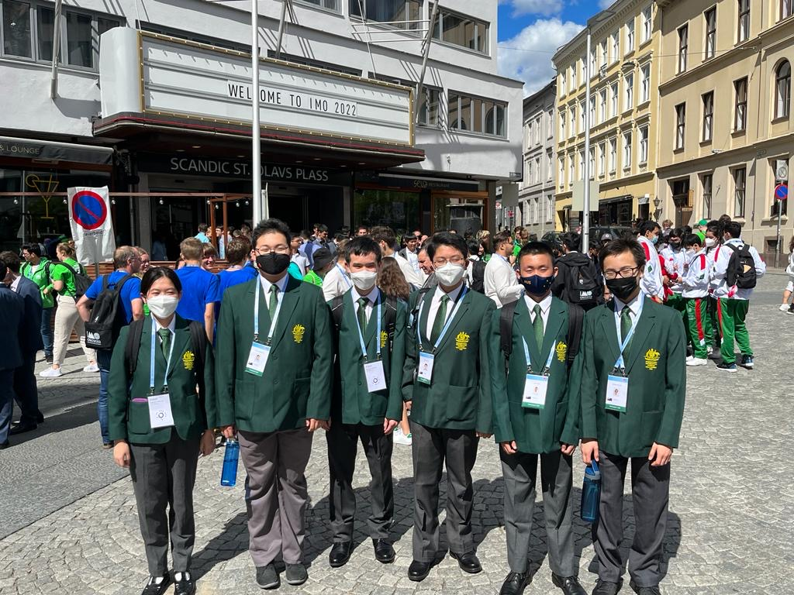
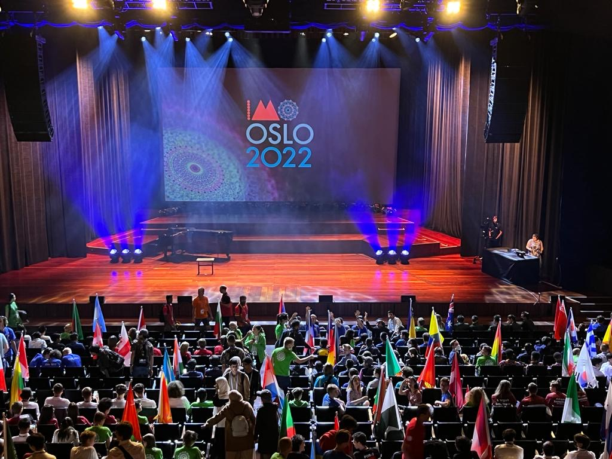
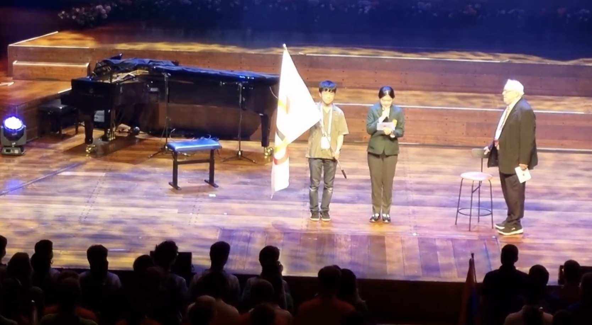
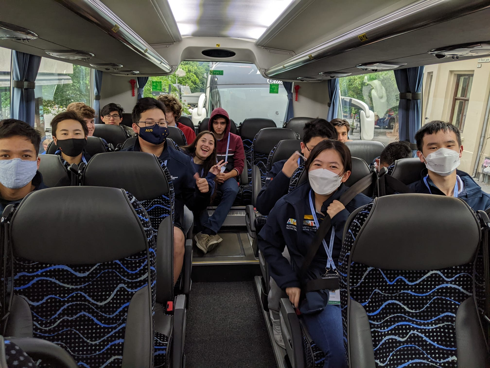
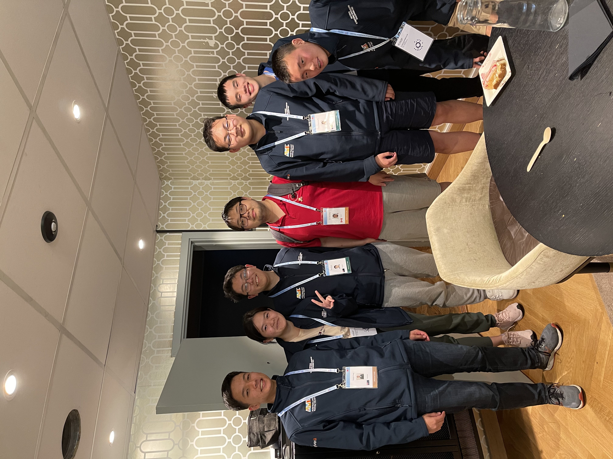
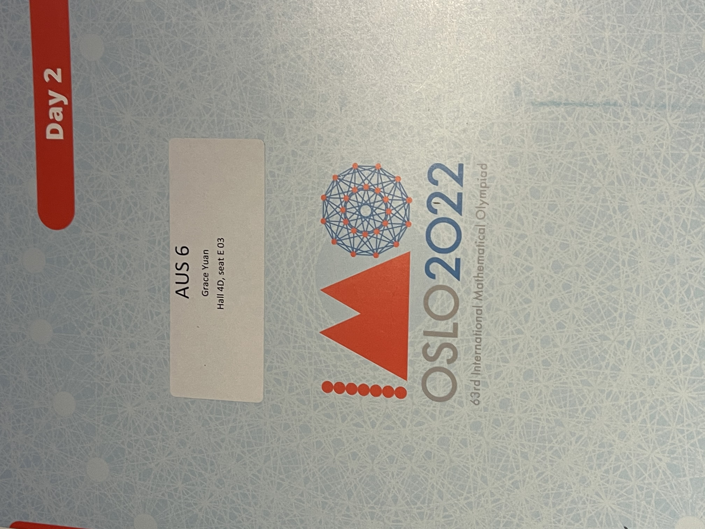

The math olympiad years were some of my most memorable. Here are the stories behind the results.
Two weeks I'll never forget. I went to Oslo expecting a math competition and came back with so much more. By the end of our practice sessions, I'd somehow fallen in love with four-and-a-half-hour exams — I genuinely could've kept going.
The people made it special. 15,976 km from Melbourne, I met strangers on planes, shared tables with people I couldn't even speak the same language as, and bonded with someone on a bus over a song. A contestant printed a geometric problem on his T-shirt that intrigued young mathematicians from various countries to sit together and discuss solutions. Girls in my dorm shared our own stories with maths, feeling inspired by each other and the fact that maths indeed transcends physical borders and intangible barriers.
I don't think I'll ever have anything quite like it again — hundreds of people from different countries who all share this one obsession with math, sitting together to discuss problems, play games, and just hang out. More incredible minds in one place than I could count. One thought kept coming back during those two weeks: I am so lucky. To sit for an IMO exam. To read the oath on behalf of all contestants at the opening ceremony. To have teammates and coaches who were as kind as they were talented. None of it was something I ever dared to imagine.
Coming home felt bittersweet. My only real regret? I fell in love with competition math right at the end — just when I felt most fired up, the journey was over.
So this journey to Oslo was more than just the IMO.









Due to COVID, we couldn't be there in person, so we took our exams online and our pre-competition team bonding was... an online escape room. Not quite the same as Oslo, but still a lot of fun.